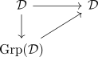
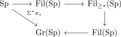
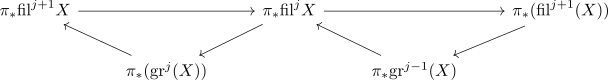

Ferdi - Kurs: infinity categories in topology 2
List
- left fibration and each lift is p-cocarteisan / right fibration and each lift is p-cartesian
- projection is bicartesian / unstraightening of projection is constant functor
- covariant infinity hom functor / contravariant infinity hom functor &
- use $\mathcal{C}_{x/} \rightarrow \mathcal{C}$ is left fibration, fiber is mapping anima $x,y$
- target map from RSL as universal cocartesian fibration
- target map of ArR as cocartesian fibration / source map of Arrow category is a cartesian fibration / unstraightening of the target map / unstraightening of the source map
- slice category functor / coslice category functor
yoneda
todo
- durchgehen: yoneda
- triangle identities
- pointwise construction of left adjoints / pointwise construction of right adjoints
- right adjoint / left adjoint / adjunction
- right adjoint object / left adjoint object
- Lurie theorem about colimits in Anima / Lurie theorem about limits in Anima
- Lurie theorem about colimits in Cat infinity / Lurie theorem about limits in Cat infinity
- remark: kan extension auf anima
- coslice category functor admits left adjoint on functors with colimits idk true ??
- slice category functor admits left adjoint on functors with colimits
neu
- pointwise calculation of limits / pointwise calculation of colimits
- commutative square of left kan extensions
todo
- unstraightening nacharbeiten;
- yoneda nacharbeiten
- injective model structure / kernel model structure on ChA
- projective model structure / cokernel model structure on ChA
- model structure of the derived category
- finitely cocomplete infinity category and pushouts and finite coproducts
- cocomplete category and arbitrary coproducts and pushout
stuff
- group d für endliche limiten & terminale objecte
~> dann faktorisiert

list
- coproduct from graded objects is symmetric monoidal
- colimit from filtered objects is symmetric monoidal
- underlying graded object functor of a filtered object
- underlying graded object functor is symmetric monoidal
- integers
- forgetful functor from filtered to graded objects_
- forgetful functor from filtered to graded objects is lax monoidal
- underlying graded object of the monoidal unit of filtered objects
- underlying graded object functor is symmetric monoidal
- filtered objects is modules in graded objects
- symmetric monoidal category is module over the tensor unit
- symmetric monoidal equivalence between modules of filtered / graded objects
- base change is symmetric monoidal
- whitehead filtered objects
- inclusion of whithead filtered spectra admits right adjoint
- tensor product of spectra restricts to whitehead filtered objects

where the first two are lax, the other two are strict monoidal
coole spektralsequenzen
Let $\mathrm{fil}^* X$ be a filtered object where
- $X \simeq \mathrm{colim} \mathrm{fil}^* X$
- $0 \simeq \mathrm{lim} \mathrm{fil}^* X$
or
- $X \simeq \mathrm{lim} \mathrm{fil}^* X$
- $0 \simeq \mathrm{colim} \mathrm{fil}^* X$
how can we calculate $\pi_*(X)$ ? Suppose we can calculate the homotopy groups of the graded stuff

where each triangle fits into a long exact sequence
adams spectral seq
angenomemn: topologischer raum:
- auf $U_i$ open cover + sheaf
- wann kann ich verkleben ?
- faithfully flat descend